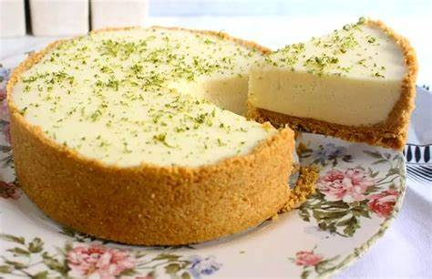

Torta de Limão
Ingredientes:
- 1 pacote de biscoito maizena
- 6 colheres de sopa de manteiga derretida
- 1 lata de leite condensado
- 1 caixinha de creme de leite
- 1/2 xícara de suco de limão
- Raspas de limão a gosto
Modo de Preparo:
- Primeiro, triture o biscoito maizena no liquidificador ou processador até virar uma farofa.
- Em uma tigela, misture a farofa de biscoito com a manteiga derretida até formar uma massa.
- Forre o fundo de uma forma de fundo removível com essa massa e leve ao forno pré-aquecido a 180°C por 10 minutos.
- Enquanto a massa assa, prepare o recheio: no liquidificador, bata o leite condensado, o creme de leite e o suco de limão até ficar bem cremoso.
- Retire a massa do forno e deixe esfriar.
- Depois que a massa esfriar, coloque o recheio de limão sobre a base de biscoito.
- Decore com as raspas de limão e leve à geladeira por, pelo menos, 4 horas.
- Sirva bem gelada e aproveite!